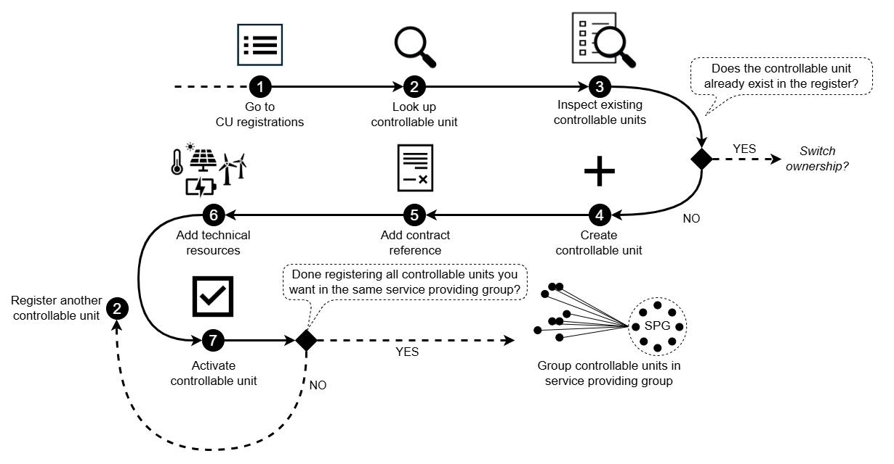

Registering a Controllable Unit
This guide explains how a Service Provider (SP) can register a new Controllable Unit (CU) in the Flexibility Information System (FIS). It explains each step that is needed as well as the reason why these steps are required.
Learn more about the CU and related concepts here: Conceptual model
The illustration below shows the steps needed to register a controllable unit in the FIS.

1. Start at CU registrations
Begin by navigating to CU registrations.
This is where the CU registration
process starts.
2. Look up the controllable unit
Before creating a new controllable unit, ensure that it does not already exist in the register by performing the CU lookup process.
This process also confirms that the accounting point belongs to the end user. The end user ID is required in order to prevent unauthorized use of the lookup function.
3. Check if the controllable unit already exists
Inspect the list of CUs at the accounting point:
- If the CU does not appear → proceed to
Create a new controllable unit. - If the CU does appear → the CU is already registered.
If the CU is receiving a new contract to switch service provider, follow the service provider switching process.
4. Create a new controllable unit
Create a new controllable unit and provide the required information as described in the portal.
Note
The information required supports several processes:
- Grid validation: It enables the system operator to assess whether the CU can operate safely within the grid.
- SPG registration: It ensures that the CU can be correctly linked to a service providing group (SPG), which determines how the CU will participate in flexibility markets.
- SPG product application: It influences the prequalification application for the SPG, since the technical characteristics of the CU affect the overall delivery potential of the group.
5. Add reference to the end‑user contract
The contract reference between the service provider and the end user needs to be registered.
The contract establishes the service provider’s right to control the CU and functions as the authorization mechanism within the register. This enables the service provider to manage the CU in the system.
Note
It is not possible to add contracts with start dates in the future when registering a new CU.
6. Add technical resources
The next step is to add technical resources, which represent the assets that the controllable unit consists of.
A controllable unit may contain several technical resources, and each must be added individually in the portal.
Note
Registering these resources is important because:
- It provides the technical details needed by procuring system operators when performing product prequalification.
- It enables more efficient evaluation when different CUs contain identical or similar technical resources.
7. Activate the controllable unit
The controllable unit is now registered in the FIS, but it is only visible for the SP that has registered it because it has not been activated.
Review all information to ensure everything is correct before activating the controllable unit.
When a controllable unit is activated, the connecting system operator is notified. The connecting system operator will grid validate the controllable unit.
The system operator sets a grid validation status and the service provider is notified of the status. The status is registered on the controllable unit.
Next step: Grouping controllable units in a service providing group
Once the CU is registered, it can be added to a service providing group (SPG) - also before the CU is grid validated.
You may choose between two valid workflows:
-
Add each CU to an SPG immediately after registration
-
Register all CUs first, then group them
If you plan to include several CUs in the same SPG, you can complete the registration of all those CUs first. When you are done registering the relevant units, you can create or update an SPG and add the CUs together.
→ Continue with the guide on grouping CUs.